第4章 · 原课件与完整中文翻译
上方为英文原页，下方为对应的完整中文翻译，标题、正文、图内文字和公式按原页顺序排列。
页号按PDF顺序。原课件的历史日期、学期、课堂安排和研究结论按原文保留；相关概念与适用条件见教程正文。符号、代码、作者姓名及便于检索的专有名称保留原文。
Lecture 04 · 61页
Lecture 04 · PDF p1
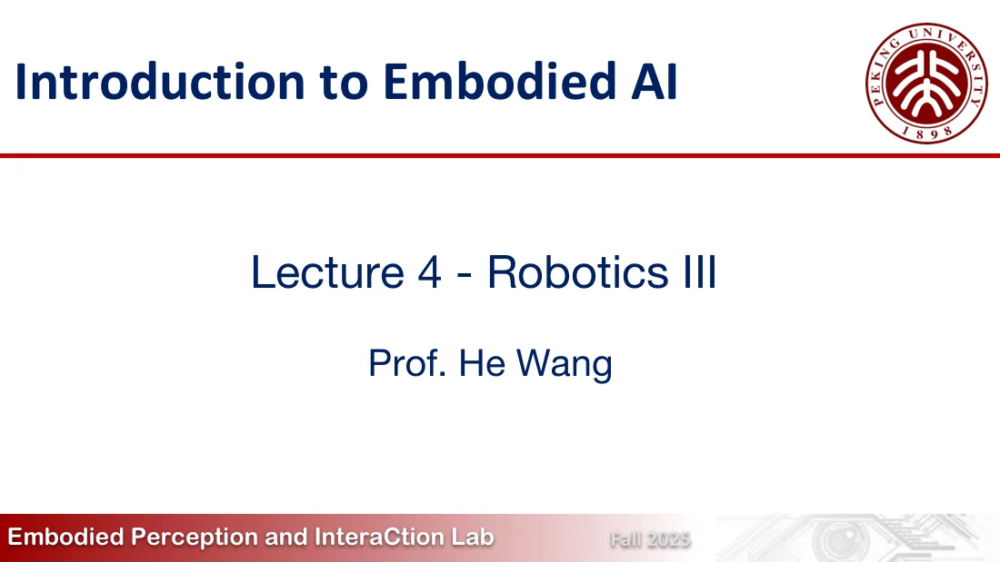
第4讲：机器人学（三）
王鹤教授
具身感知与交互实验室
2025年秋季
Lecture 04 · PDF p2
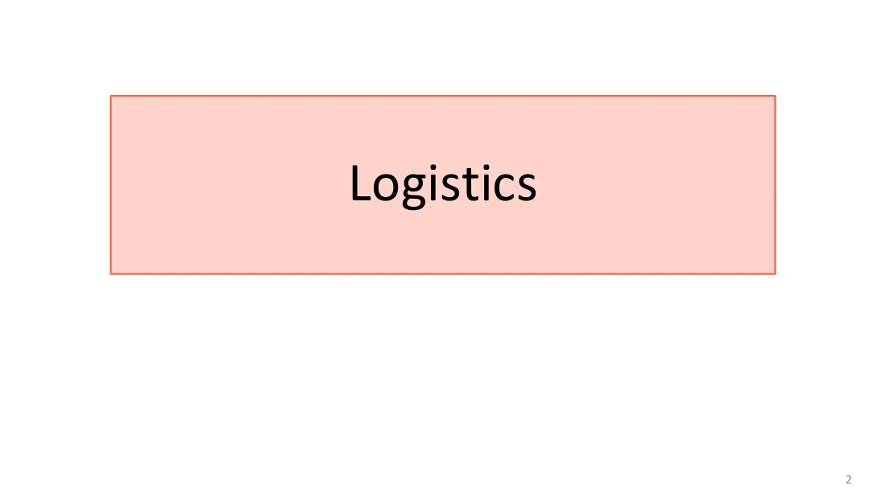
Lecture 04 · PDF p3
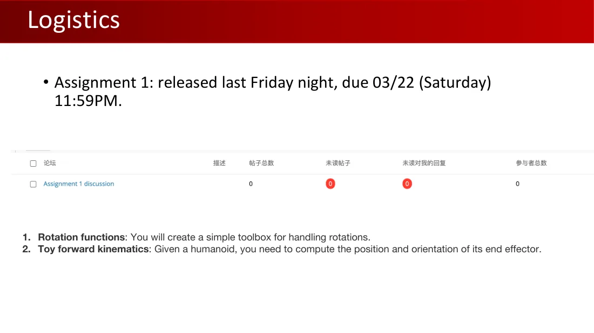
- 作业1：上周五晚上发布，截止时间为3月22日（星期六）23:59。
作业1讨论
- 旋转函数：创建一个处理旋转的简单工具箱。
- 简化正向运动学：给定一个人形机器人，计算其末端执行器的位置和朝向。
Lecture 04 · PDF p4
Lecture 04 · PDF p5
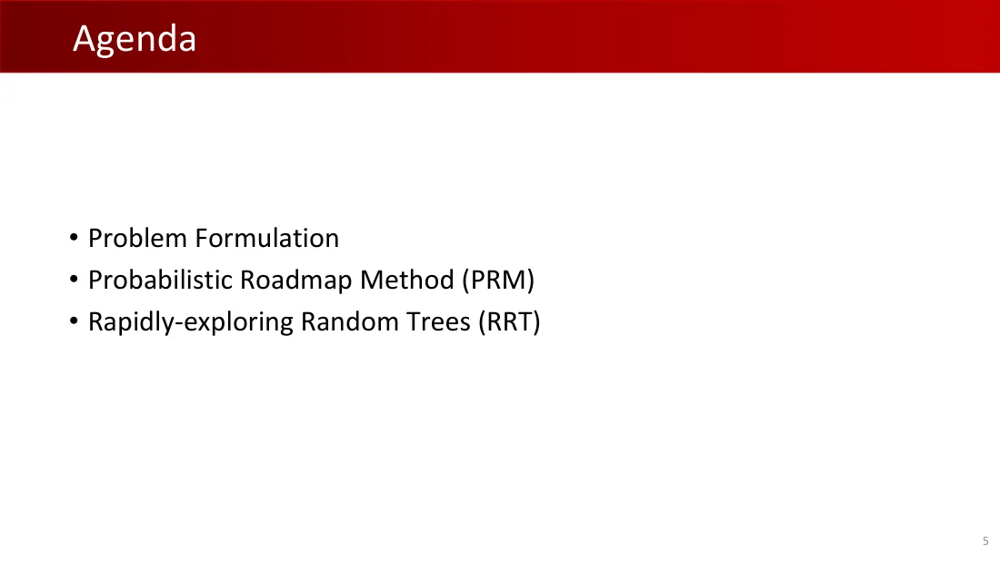
- 问题形式化
- 概率路图法（PRM）
- 快速扩展随机树（RRT）
Lecture 04 · PDF p6
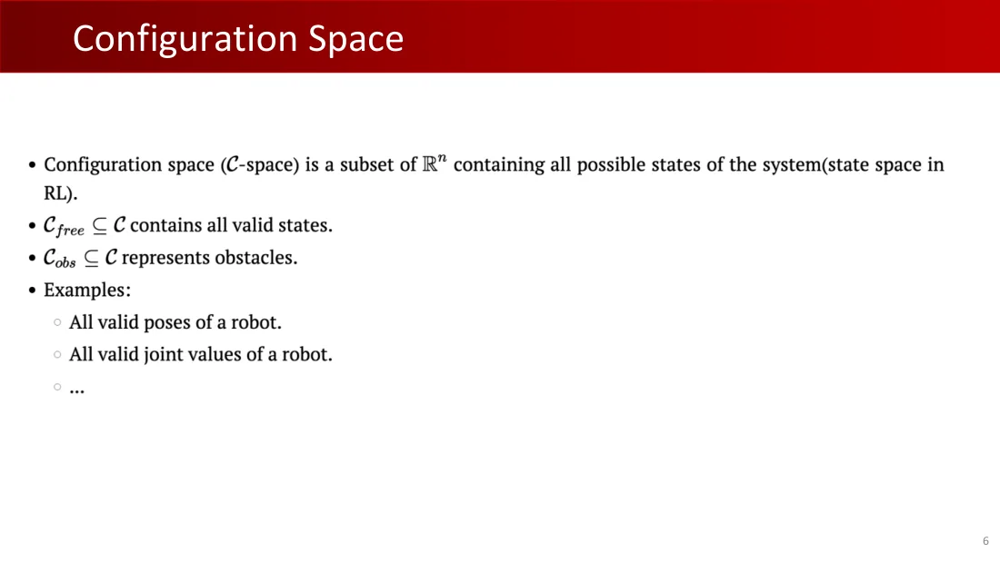
- 配置空间（C-space）是\(\mathbb R^n\)的一个子集，包含系统所有可能状态（强化学习中的状态空间）。
- \(C_{\mathrm{free}}\subseteq C\)包含所有有效状态。
- \(C_{\mathrm{obs}}\subseteq C\)表示障碍。
- 例子：
- 机器人的所有有效位姿。
- 机器人的所有有效关节值。
- ……
Lecture 04 · PDF p7
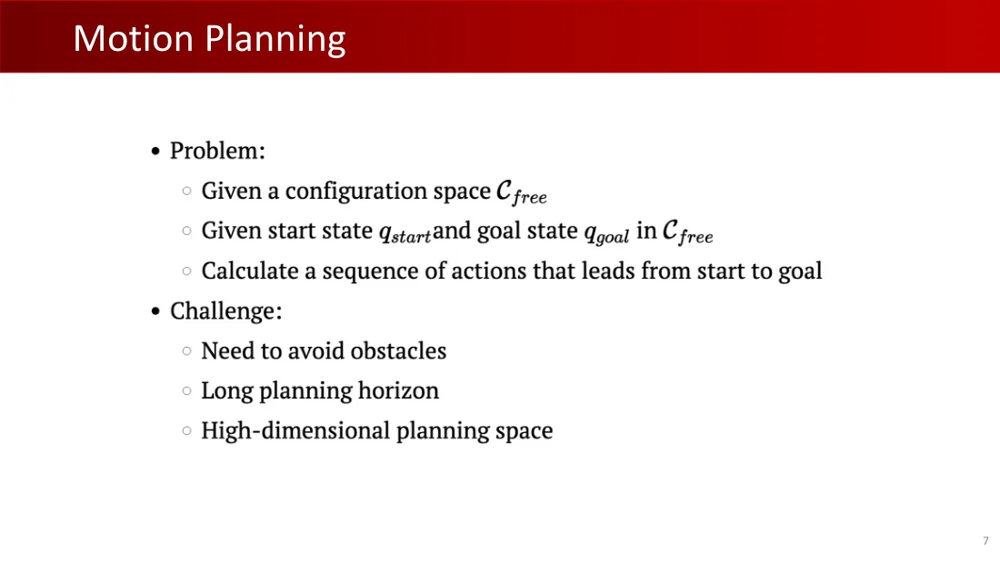
- 问题：
- 给定配置空间\(C_{\mathrm{free}}\)。
- 给定\(C_{\mathrm{free}}\)中的起始状态\(q_{\mathrm{start}}\)和目标状态\(q_{\mathrm{goal}}\)。
- 计算从起点到终点的动作序列。
- 挑战：
- 需要避开障碍物。
- 规划时间范围长。
- 规划空间维数高。
Lecture 04 · PDF p8
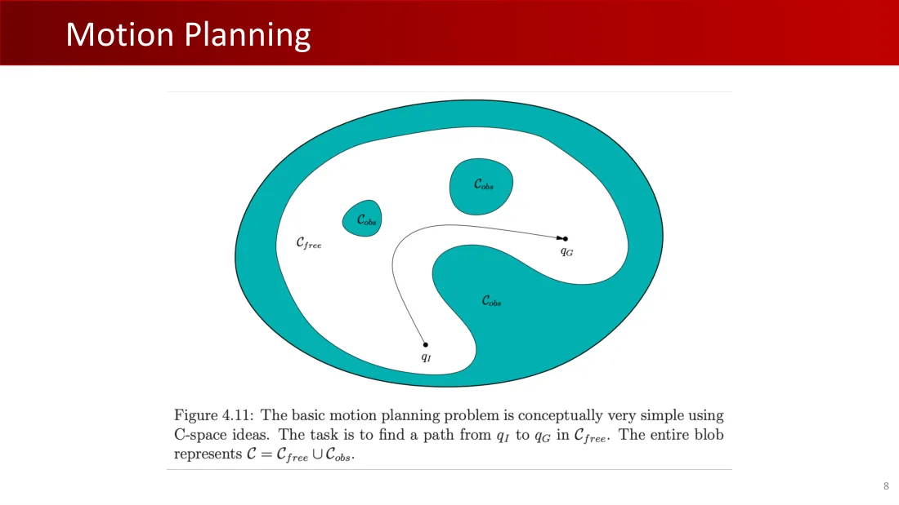
\(C_{\mathrm{free}}\)：自由配置空间；\(C_{\mathrm{obs}}\)：障碍配置空间；\(q_I\)：起点；\(q_G\)：目标。
图4.11：采用配置空间的概念，基本运动规划问题在概念上很简单。任务是在\(C_{\mathrm{free}}\)中找到从\(q_I\)到\(q_G\)的路径。整个区域表示\(C=C_{\mathrm{free}}\cup C_{\mathrm{obs}}\)。
Lecture 04 · PDF p9
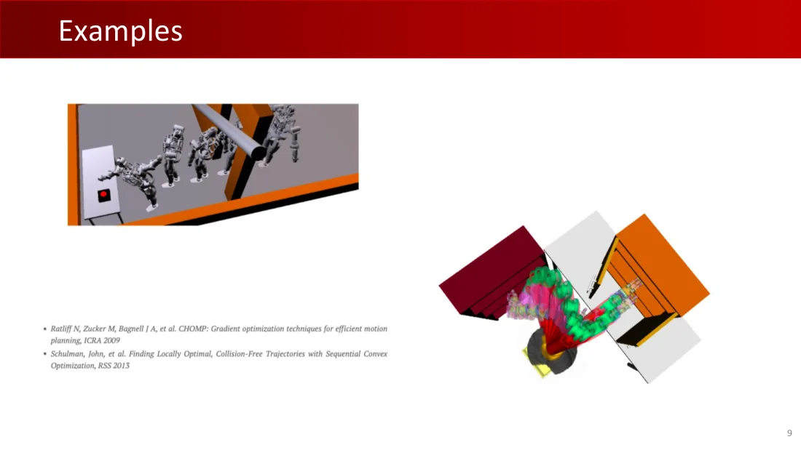
- Ratliff N, Zucker M, Bagnell J A, et al. 《CHOMP：高效运动规划的梯度优化技术》，ICRA 2009。
- Schulman, John, et al. 《通过序列凸优化寻找局部最优的无碰撞轨迹》，RSS 2013。
Lecture 04 · PDF p10
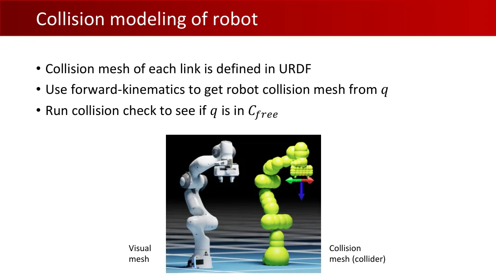
- 每个连杆的碰撞网格在URDF中定义。
- 使用正向运动学，根据q得到机器人的碰撞网格。
- 执行碰撞检查，判断q是否在\(C_{\mathrm{free}}\)中。
显示网格；碰撞网格（碰撞体）。
Lecture 04 · PDF p11
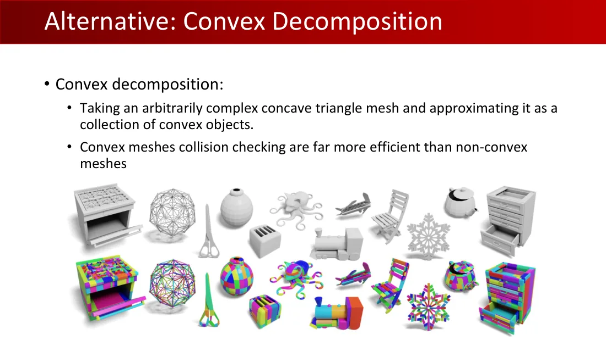
- 凸分解：
- 将任意复杂的凹三角网格近似为一组凸物体。
- 凸网格的碰撞检查远比非凸网格高效。
Lecture 04 · PDF p12
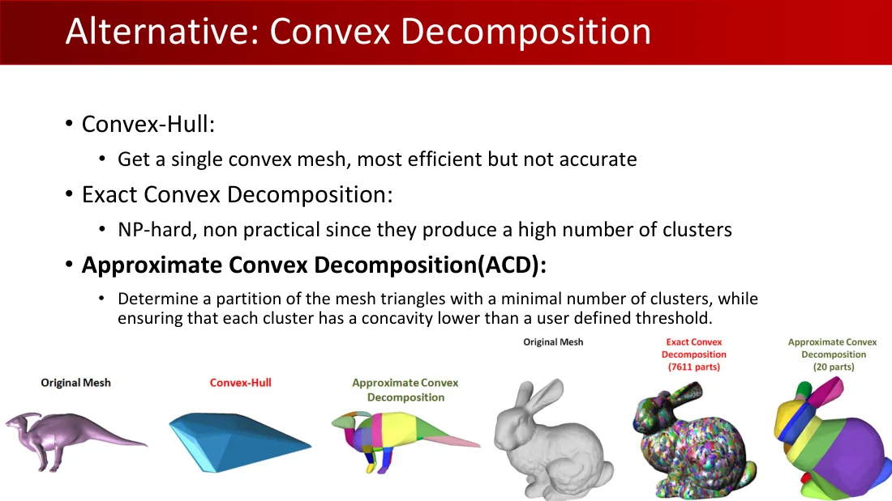
- 凸包：得到单个凸网格，效率最高，但不精确。
- 精确凸分解：NP难；由于生成大量簇，实用性不足。
- 近似凸分解（ACD）：将网格三角形分成尽量少的簇，同时确保每个簇的凹度低于用户定义的阈值。
原始网格；凸包；近似凸分解。
原始网格；精确凸分解（7611部分）；近似凸分解（20部分）。
Lecture 04 · PDF p13
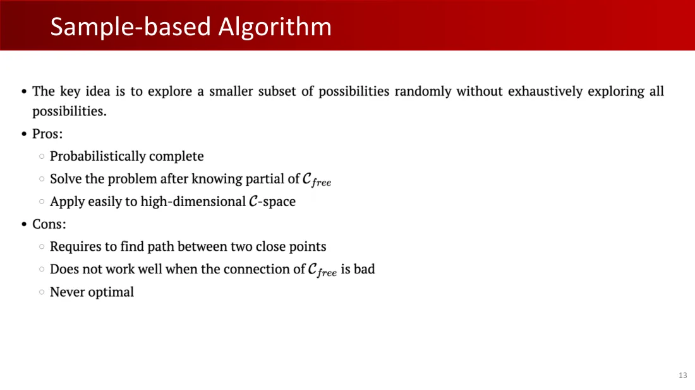
- 核心思想：随机探索可能情况中的较小子集，而不是穷尽所有可能情况。
- 优点：
- 概率完备。
- 只了解部分\(C_{\mathrm{free}}\)即可求解问题。
- 容易应用于高维配置空间。
- 缺点：
- 需要找到两个相近点之间的路径。
- \(C_{\mathrm{free}}\)连通性较差时效果不好。
- 永不最优。
Lecture 04 · PDF p14
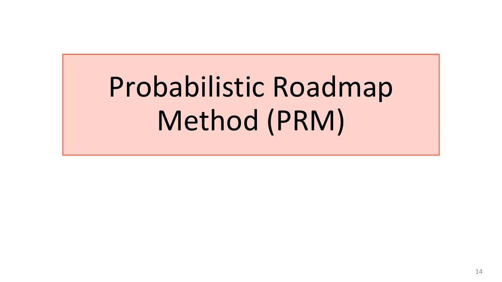
Lecture 04 · PDF p15
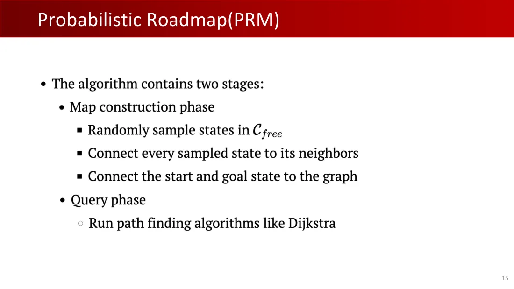
- 算法包含两个阶段：
- 建图阶段：
- 在\(C_{\mathrm{free}}\)中随机采样状态。
- 将每个采样状态与其邻居连接。
- 将起始状态和目标状态连接到图。
- 查询阶段：运行Dijkstra等寻路算法。
- 建图阶段：
Lecture 04 · PDF p16
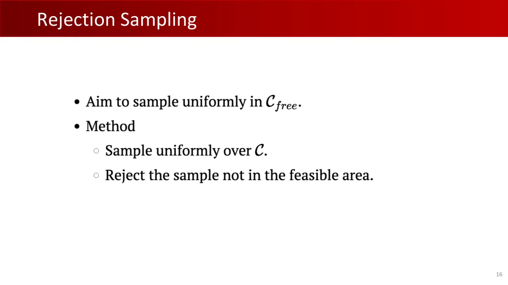
- 目标是在\(C_{\mathrm{free}}\)中均匀采样。
- 方法：
- 在C上均匀采样。
- 拒绝不在可行区域中的样本。
Lecture 04 · PDF p17
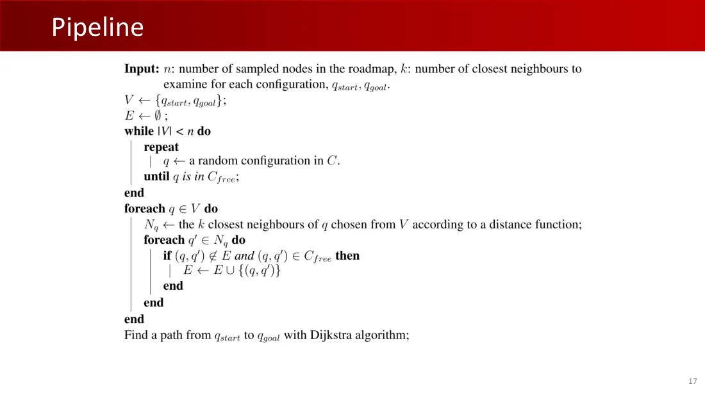
输入：n为路图中的采样节点数，k为每个配置需检查的最近邻数，\(q_{\mathrm{start}}\)、\(q_{\mathrm{goal}}\)。
\(V\leftarrow\{q_{\mathrm{start}},q_{\mathrm{goal}}\};\quad E\leftarrow\varnothing\)。
- 当\(|V|
- 对每个\(q\in V\)：
- \(N_q\)←根据距离函数，从V中选取q的k个最近邻。
- 对每个\(q^{\prime}\in N_q\)：若\((q,q^{\prime})\notin E\)且\((q,q^{\prime})\in C_{\mathrm{free}}\)，则\(E\leftarrow E\cup\{(q,q^{\prime})\}\)。
- 对每个\(q\in V\)：
使用Dijkstra算法寻找从\(q_{\mathrm{start}}\)到\(q_{\mathrm{goal}}\)的路径。
Lecture 04 · PDF p18
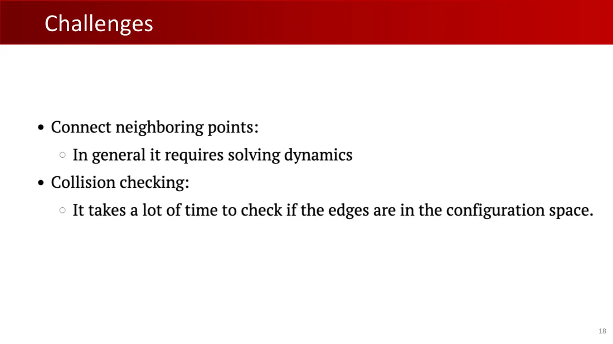
- 连接相邻点：通常需要求解动力学。
- 碰撞检查：检查边是否位于配置空间中需要很长时间。
Lecture 04 · PDF p19
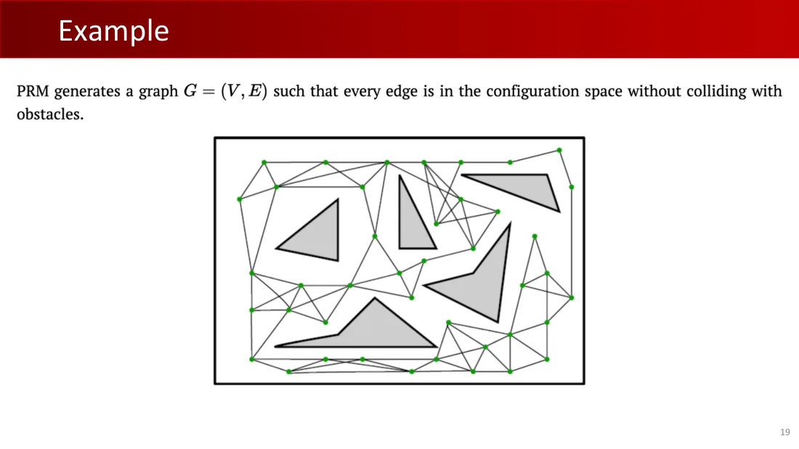
PRM生成图\(G=(V,E)\)，使每条边都位于配置空间中，且不与障碍碰撞。
Lecture 04 · PDF p20
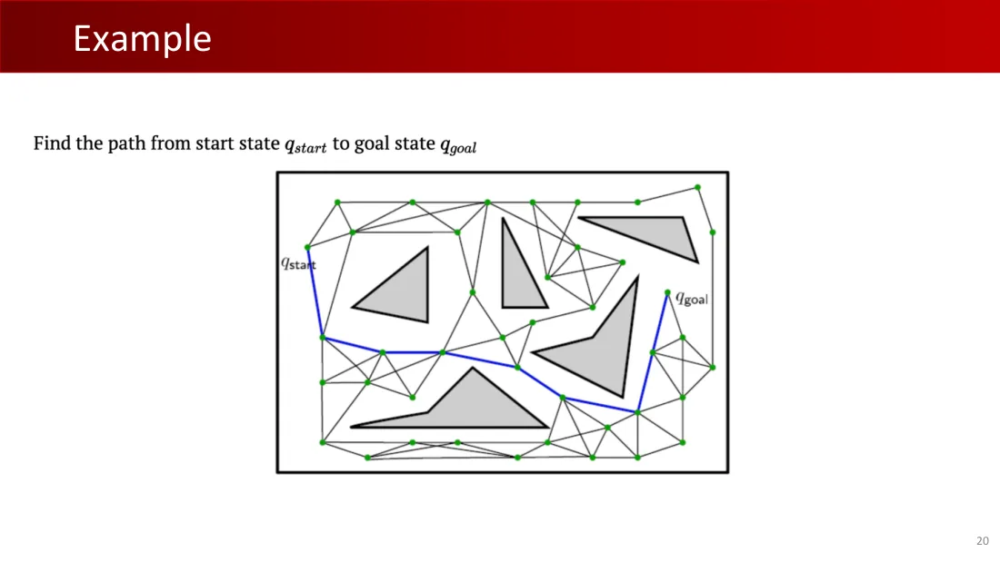
寻找从起始状态\(q_{\mathrm{start}}\)到目标状态\(q_{\mathrm{goal}}\)的路径。
\(q_{\mathrm{start}}\)；\(q_{\mathrm{goal}}\)。
Lecture 04 · PDF p21
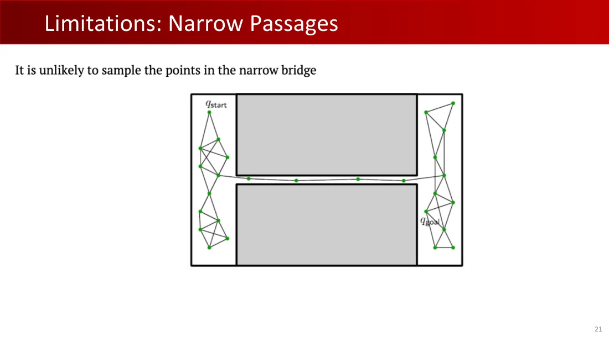
不容易在狭窄桥接区域采到点。
\(q_{\mathrm{start}}\)；\(q_{\mathrm{goal}}\)。
Lecture 04 · PDF p22
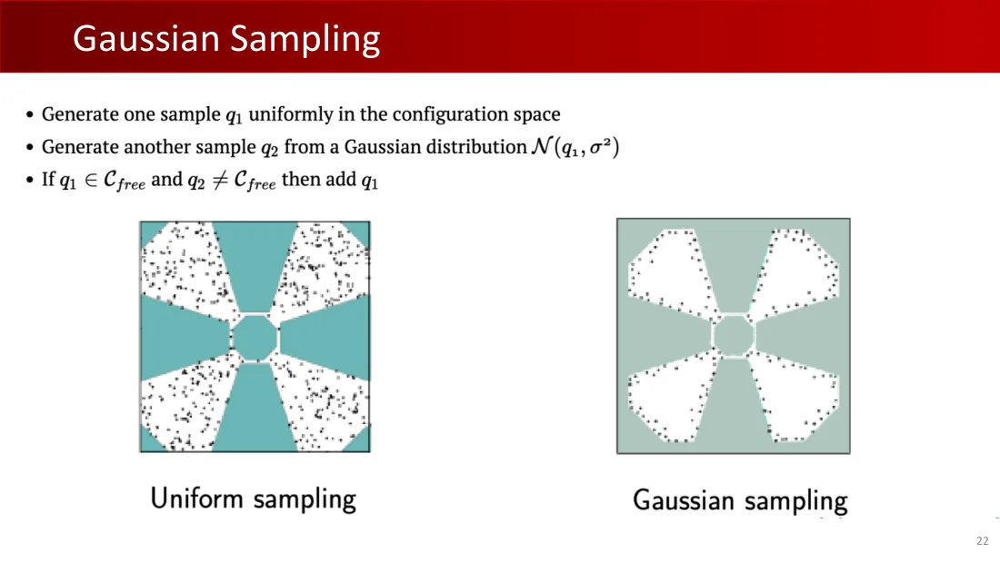
- 在配置空间中均匀生成样本\(q_1\)。
- 从高斯分布\(N(q_1,\sigma^2)\)生成另一个样本\(q_2\)。
- 若\(q_1\in C_{\mathrm{free}}\)且\(q_2\notin C_{\mathrm{free}}\)，则加入\(q_1\)。
均匀采样；高斯采样。
Lecture 04 · PDF p23
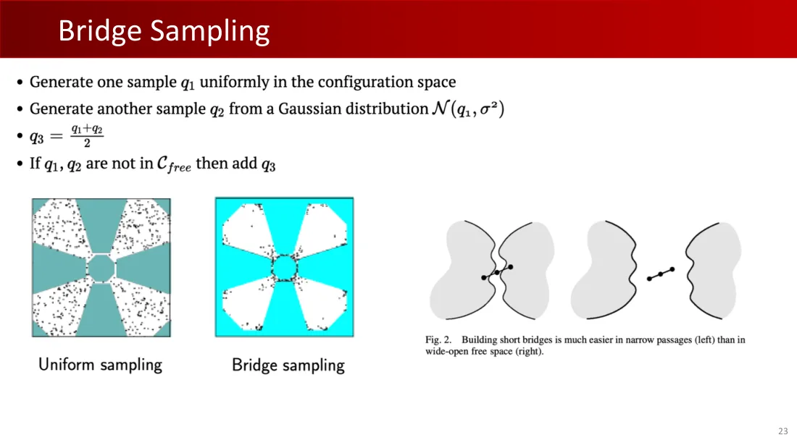
- 在配置空间中均匀生成样本\(q_1\)。
- 从高斯分布\(N(q_1,\sigma^2)\)生成另一个样本\(q_2\)。
- \(q_3=\frac{q_1+q_2}{2}\)。
- 若\(q_1\)、\(q_2\)均不在\(C_{\mathrm{free}}\)中，则加入\(q_3\)。
均匀采样；桥采样。
图2：在窄通道（左）中建立短桥，比在宽开放自由空间（右）中容易得多。
Lecture 04 · PDF p24
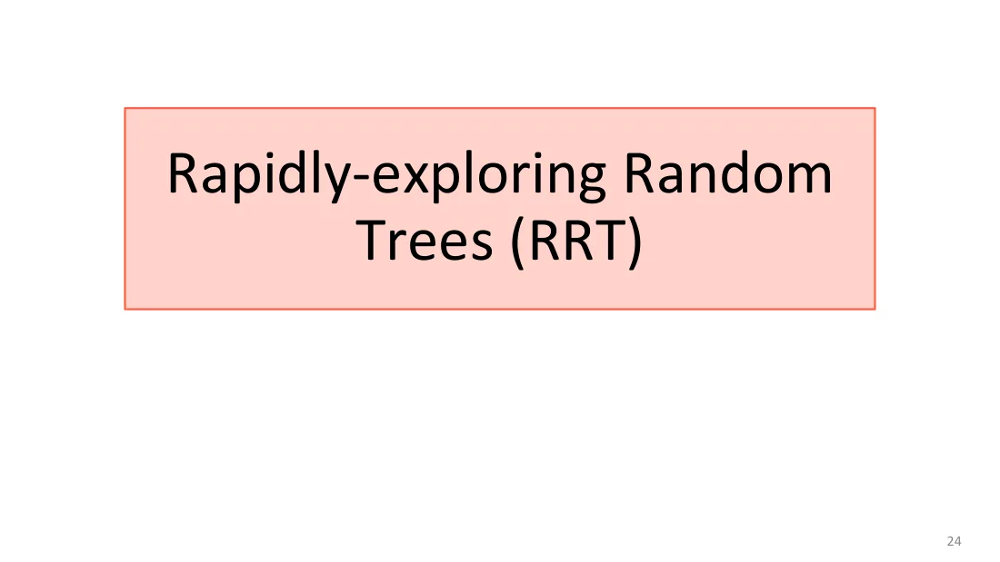
Lecture 04 · PDF p25
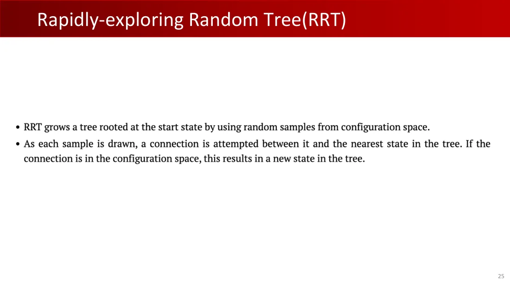
- RRT利用配置空间中的随机样本，生长一棵以起始状态为根的树。
- 每采到一个样本，尝试连接它与树中最近的状态。若该连接位于配置空间中，便在树中产生一个新状态。
Lecture 04 · PDF p26
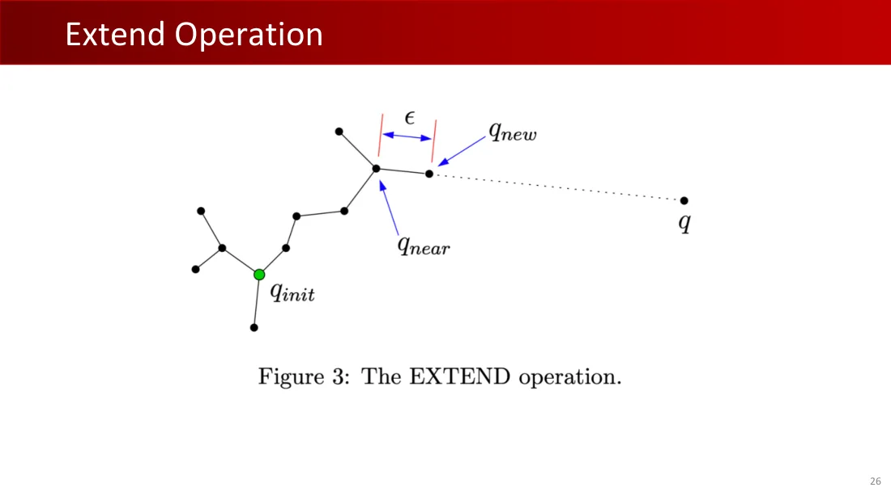
\(q_{\mathrm{init}}\)；\(q_{\mathrm{near}}\)；\(q_{\mathrm{new}}\)；q；\(\varepsilon\)。
图3：EXTEND扩展操作。
Lecture 04 · PDF p27
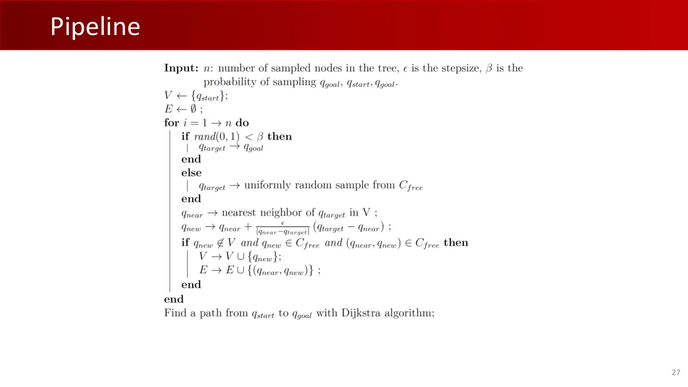
输入：n为树中的采样节点数，\(\varepsilon\)为步长，\(\beta\)为采样\(q_{\mathrm{goal}}\)的概率，\(q_{\mathrm{start}}\)、\(q_{\mathrm{goal}}\)。
\(V\leftarrow\{q_{\mathrm{start}}\};\quad E\leftarrow\varnothing\)。
- 对i=1至n：
- 若\(\operatorname{rand}(0,1)<\beta\)，则\(q_{\mathrm{target}}\leftarrow q_{\mathrm{goal}}\)；否则\(q_{\mathrm{target}}\)←从\(C_{\mathrm{free}}\)均匀随机采样。
- \(q_{\mathrm{near}}\)←V中\(q_{\mathrm{target}}\)的最近邻。
- \(q_{\mathrm{new}}\leftarrow q_{\mathrm{near}}+\varepsilon\frac{q_{\mathrm{target}}-q_{\mathrm{near}}}{|q_{\mathrm{near}}-q_{\mathrm{target}}|}\)。
- 若\(q_{\mathrm{new}}\notin V\)、\(q_{\mathrm{new}}\in C_{\mathrm{free}}\)且\((q_{\mathrm{near}},q_{\mathrm{new}})\in C_{\mathrm{free}}\)，则\(V\leftarrow V\cup\{q_{\mathrm{new}}\}\)，\(E\leftarrow E\cup\{(q_{\mathrm{near}},q_{\mathrm{new}})\}\)。
使用Dijkstra算法寻找从\(q_{\mathrm{start}}\)到\(q_{\mathrm{goal}}\)的路径。
Lecture 04 · PDF p28
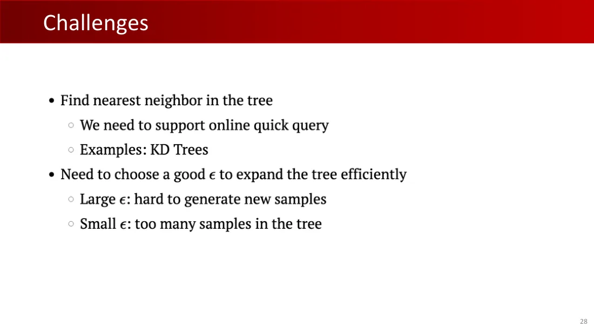
- 在树中寻找最近邻：
- 需要支持快速在线查询。
- 例子：KD树。
- 需要选择合适的\(\varepsilon\)，以高效扩展树：
- \(\varepsilon\)大：难以生成新样本。
- \(\varepsilon\)小：树中样本太多。
Lecture 04 · PDF p29
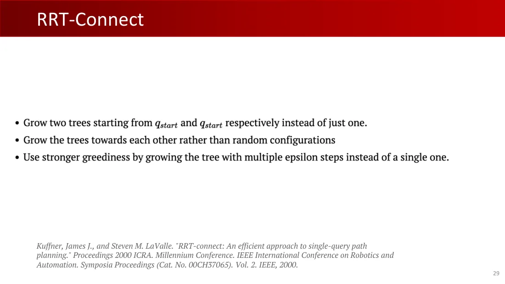
- 分别从\(q_{\mathrm{start}}\)和\(q_{\mathrm{start}}\)开始生长两棵树，而不是只生长一棵。
- 让两棵树朝彼此生长，而不是朝随机配置生长。
- 以多个\(\varepsilon\)步长生长，代替单步生长，从而加强贪婪性。
Kuffner, James J., and Steven M. LaValle. 《RRT-connect：一种高效的单次查询路径规划方法》。ICRA 2000，IEEE国际机器人与自动化会议，卷2，IEEE，2000。
Lecture 04 · PDF p30
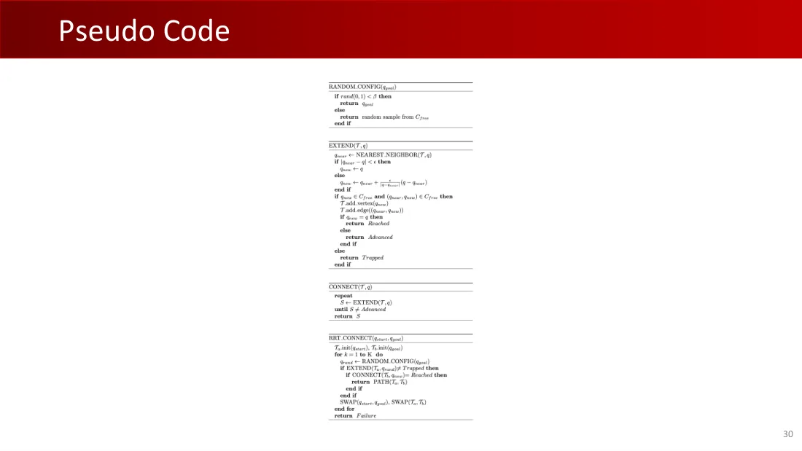
RANDOM_CONFIG(\(q_{\mathrm{goal}}\))：随机配置
若\(\operatorname{rand}(0,1)<\beta\)，返回\(q_{\mathrm{goal}}\)；否则返回\(C_{\mathrm{free}}\)中的随机样本。
EXTEND(T,q)：扩展
- \(q_{\mathrm{near}}\)←NEAREST_NEIGHBOR(T,q)。
- 若\(|q_{\mathrm{near}}-q|<\varepsilon\)，\(q_{\mathrm{new}}\leftarrow q\)；否则\(q_{\mathrm{new}}\leftarrow q_{\mathrm{near}}+\varepsilon\frac{q-q_{\mathrm{near}}}{|q-q_{\mathrm{near}}|}\)。
- 若\(q_{\mathrm{new}}\in C_{\mathrm{free}}\)且\((q_{\mathrm{near}},q_{\mathrm{new}})\in C_{\mathrm{free}}\)：T.add_vertex(\(q_{\mathrm{new}}\))，T.add_edge((\(q_{\mathrm{near}}\),\(q_{\mathrm{new}}\)))；若\(q_{\mathrm{new}}=q\)，返回Reached（到达），否则返回Advanced（前进）。
- 否则返回Trapped（受阻）。
CONNECT(T,q)：连接
重复S←EXTEND(T,q)，直到S≠Advanced；返回S。
RRT_CONNECT(\(q_{\mathrm{start}}\),\(q_{\mathrm{goal}}\))
- T_a.init(\(q_{\mathrm{start}}\))，T_b.init(\(q_{\mathrm{goal}}\))。
- 对k=1至K：q_rand←RANDOM_CONFIG(\(q_{\mathrm{goal}}\))；若EXTEND(T_a,q_rand)≠Trapped且CONNECT(T_b,\(q_{\mathrm{new}}\))=Reached，返回PATH(T_a,T_b)；交换\(q_{\mathrm{start}}\)与\(q_{\mathrm{goal}}\)，交换T_a与T_b。
- 返回Failure（失败）。
Lecture 04 · PDF p31
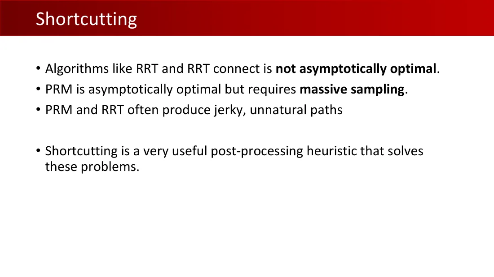
- RRT与RRT-Connect等算法不是渐近最优的。
- PRM是渐近最优的，但需要大量采样。
- PRM与RRT经常生成曲折、不自然的路径。
- 捷径化是一种非常有用的后处理启发式方法，可以解决这些问题。
Lecture 04 · PDF p32
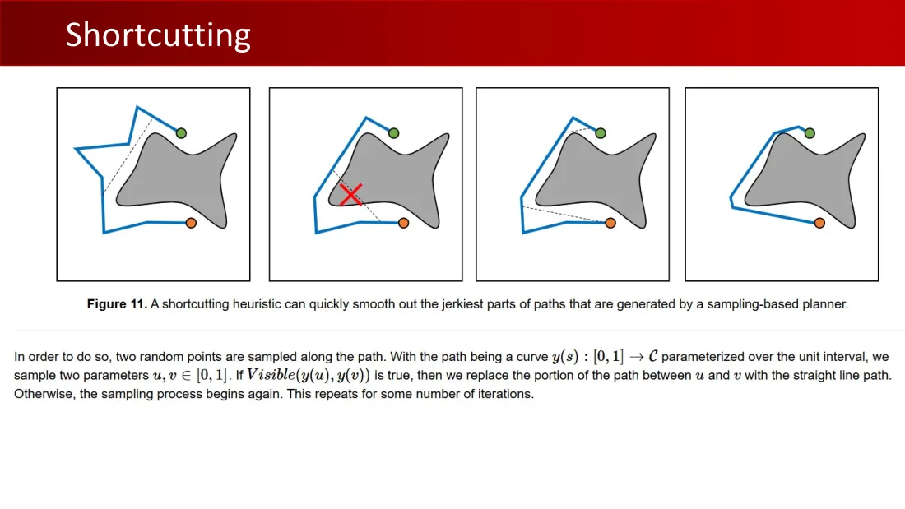
图11：捷径化启发式可以快速平滑由采样规划器生成的路径中最曲折的部分。
为此，沿路径随机采样两个点。令路径为在单位区间上参数化的曲线\(y(s):[0,1]\to C\)，采样\(u,v\in[0,1]\)。若Visible(y(u),y(v))为真，就用直线路径替换u与v之间的路径部分；否则重新开始采样。重复此过程若干次。
Lecture 04 · PDF p33
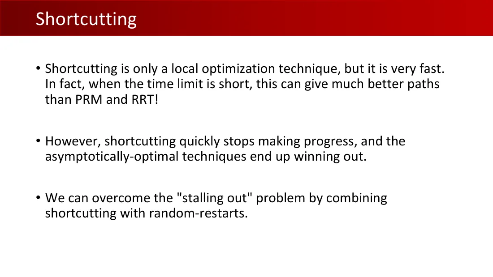
- 捷径化只是局部优化技术，但速度很快。时间限制较短时，它实际上可能给出比PRM和RRT好得多的路径！
- 然而，捷径化很快会停止改进，渐近最优技术最终会胜出。
- 将捷径化与随机重启结合，可以克服“停滞”问题。
Lecture 04 · PDF p34
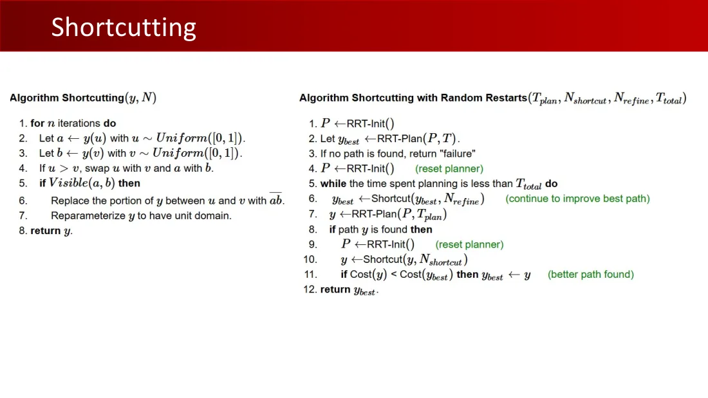
算法：Shortcutting(y,N)
- 执行n次迭代。
- 令\(a\leftarrow y(u)\)，其中\(u\sim\operatorname{Uniform}([0,1])\)。
- 令\(b\leftarrow y(v)\)，其中\(v\sim\operatorname{Uniform}([0,1])\)。
- 若\(u>v\)，交换u、v，同时交换a、b。
- 若Visible(a,b)，则用线段ab替换y中u至v的部分。
- 重新参数化y，使定义域为单位区间。
- 返回y。
算法：带随机重启的捷径化(T_plan,N_shortcut,N_refine,T_total)
- P←RRT-Init()。
- y_best←RRT-Plan(P,T)。
- 若没有找到路径，返回“失败”。
- P←RRT-Init()（重置规划器）。
- 当规划耗时小于T_total：y_best←Shortcut(y_best,N_refine)（继续改进最佳路径）；y←RRT-Plan(P,T_plan)。
- 若找到路径y：P←RRT-Init()（重置规划器）；y←Shortcut(y,N_shortcut)；若Cost(y)<Cost(y_best)，则y_best←y（找到更好的路径）。
- 返回y_best。
Lecture 04 · PDF p35
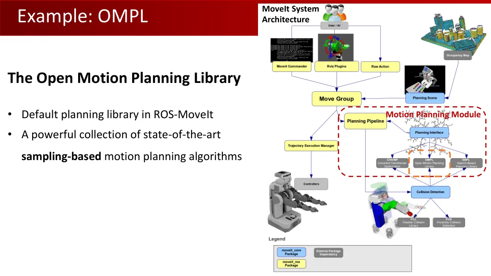
开放运动规划库
- ROS-MoveIt中的默认规划库。
- 强大的先进采样运动规划算法集合。
MoveIt系统架构
用户／人工智能；MoveIt命令接口；RViz插件；原始动作；占据地图；运动组；规划场景；运动规划模块；规划流水线；规划接口；轨迹执行管理器；控制器；CHOMP：协变哈密顿运动优化；OMPL：开放运动规划库；SBPL：基于搜索的规划库；碰撞检测；FCL：灵活碰撞库；PCD：近邻碰撞检测。
图例：moveit_core包；moveit_ros包；外部包依赖。
Lecture 04 · PDF p36
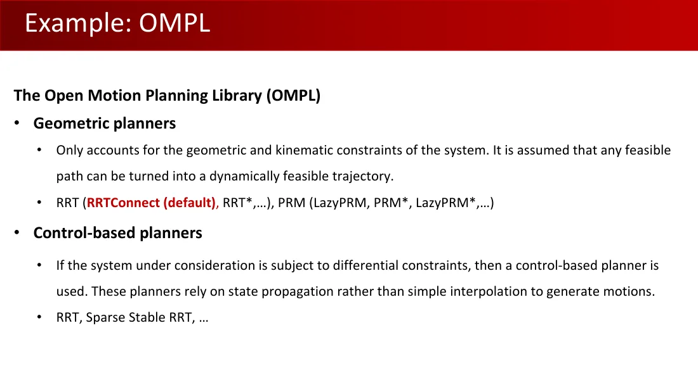
开放运动规划库（OMPL）
- 几何规划器：
- 只考虑系统的几何和运动学约束，假定任何可行路径都能转换为动力学可行轨迹。
- RRT（默认RRTConnect、RRT*等），PRM（LazyPRM、PRM*、LazyPRM*等）。
- 基于控制的规划器：
- 若所考虑的系统受微分约束，则使用基于控制的规划器。这些规划器通过状态传播，而非简单插值来生成运动。
- RRT、Sparse Stable RRT等。
Lecture 04 · PDF p37
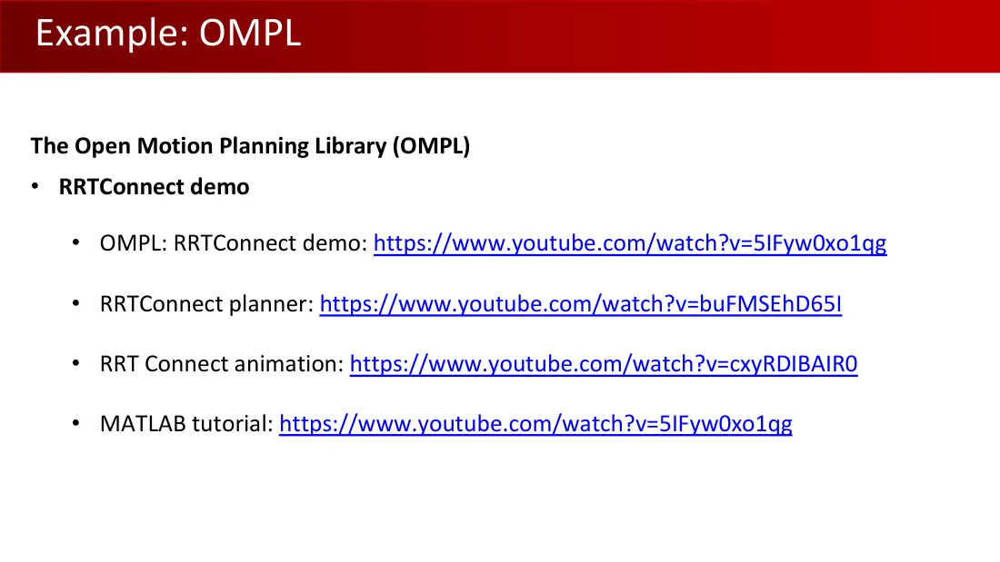
开放运动规划库（OMPL）
- RRTConnect演示：
- OMPL：RRTConnect演示：https://www.youtube.com/watch?v=5IFyw0xo1qg
- RRTConnect规划器：https://www.youtube.com/watch?v=buFMSEhD65I
- RRT Connect动画：https://www.youtube.com/watch?v=cxyRDIBAIR0
- MATLAB教程：https://www.youtube.com/watch?v=5IFyw0xo1qg
Lecture 04 · PDF p38
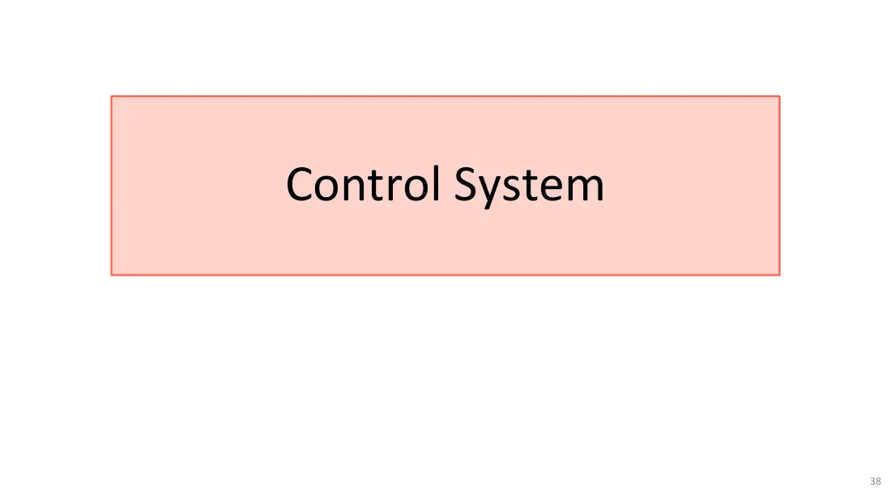
Lecture 04 · PDF p39
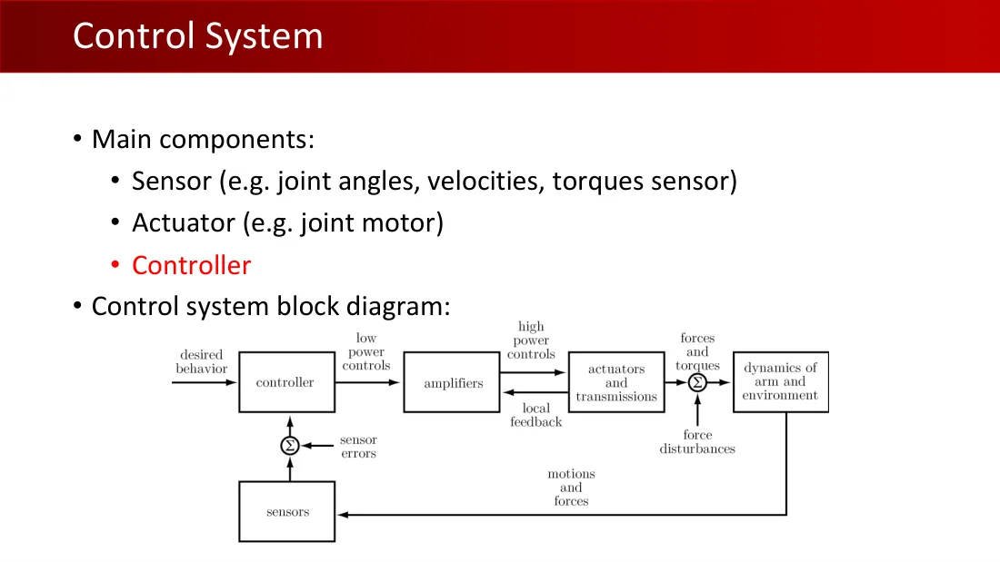
- 主要组成：
- 传感器，例如关节角度、速度、力矩传感器。
- 执行器，例如关节电机。
- 控制器。
- 控制系统框图。
期望行为→控制器→低功率控制信号→放大器→高功率控制信号→执行器与传动机构→力与力矩→机械臂与环境动力学。
局部反馈；力扰动；运动与力；传感器；传感器误差。
Lecture 04 · PDF p40
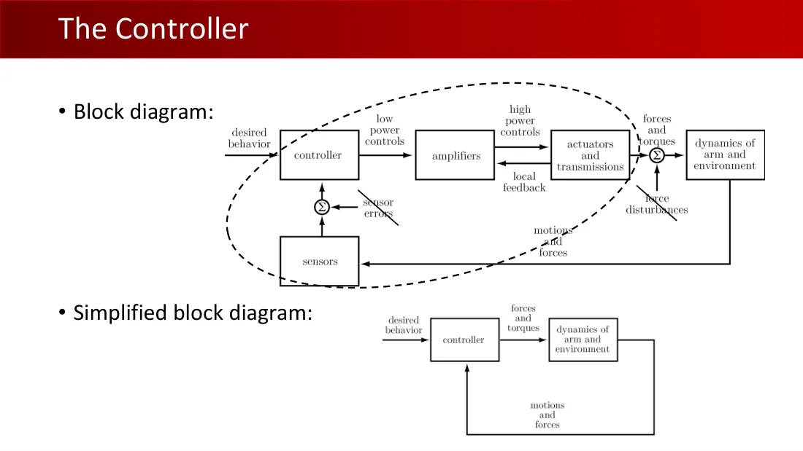
- 框图。
- 简化框图。
期望行为；控制器；低功率控制信号；放大器；高功率控制信号；执行器与传动机构；局部反馈；力与力矩；力扰动；机械臂与环境动力学；运动与力；传感器；传感器误差。
简化框图：期望行为→控制器→力与力矩→机械臂与环境动力学；反馈为运动与力。
Lecture 04 · PDF p41
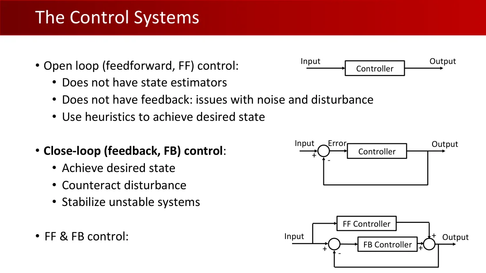
- 开环（前馈，FF）控制：
- 没有状态估计器。
- 没有反馈：存在噪声和扰动问题。
- 使用启发式方法达到期望状态。
- 闭环（反馈，FB）控制：
- 达到期望状态。
- 抵消扰动。
- 稳定不稳定系统。
- 前馈与反馈控制。
输入；误差；控制器；输出；前馈控制器；反馈控制器。
Lecture 04 · PDF p42
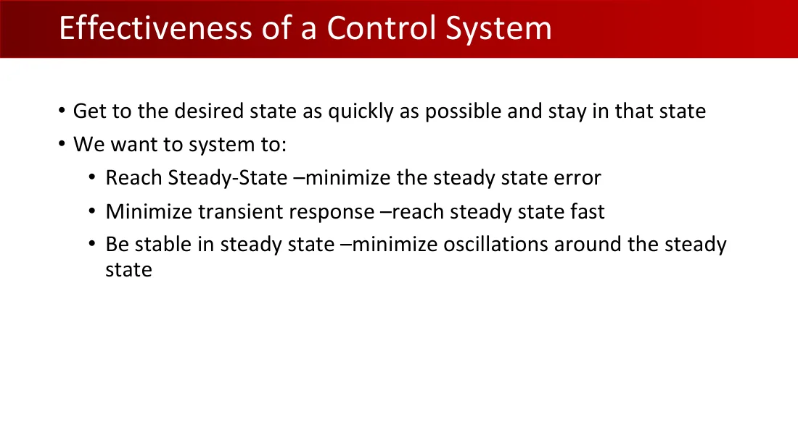
- 尽快达到期望状态，并保持该状态。
- 希望系统：
- 达到稳态——最小化稳态误差。
- 最小化瞬态响应——快速达到稳态。
- 在稳态保持稳定——最小化稳态附近的振荡。
Lecture 04 · PDF p43
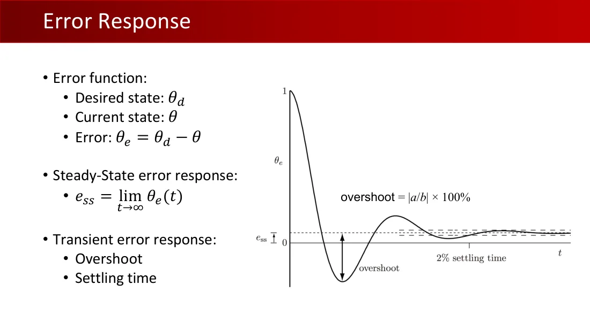
- 误差函数：
- 期望状态：\(\theta_d\)。
- 当前状态：θ。
- 误差：\(\theta_e=\theta_d-\theta\)。
- 稳态误差响应：\(e_{\mathrm{ss}}=\lim_{t\to\infty}\theta_e(t)\)。
- 瞬态误差响应：超调；调节时间。
超调=\(\left|\frac{a}{b}\right|\times100\%\)；超调；2%调节时间；\(\theta_e\)；\(e_{\mathrm{ss}}\)；t。
Lecture 04 · PDF p44
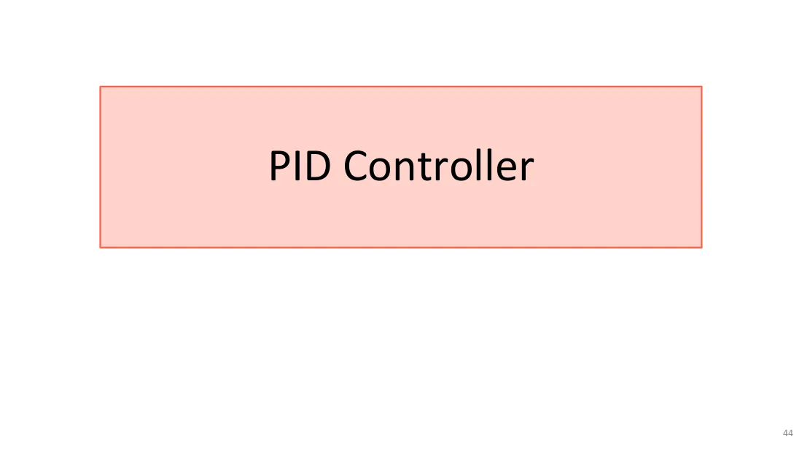
Lecture 04 · PDF p45
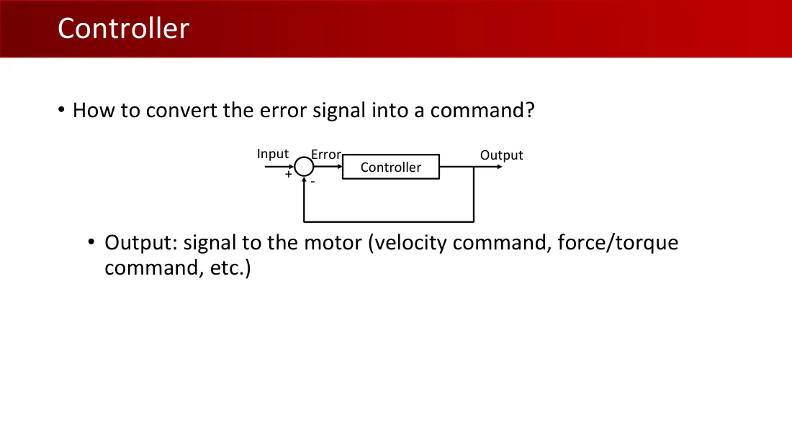
- 如何将误差信号转换为指令？
- 输出：发送给电机的信号，例如速度指令、力／力矩指令等。
输入；误差；控制器；输出。
Lecture 04 · PDF p46
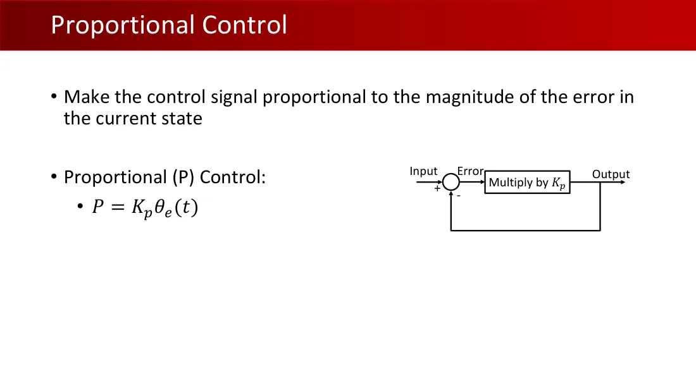
- 让控制信号与当前状态误差的大小成正比。
- 比例（P）控制：\(P=K_p\theta_e(t)\)。
输入；误差；乘以\(K_p\)；输出。
Lecture 04 · PDF p47
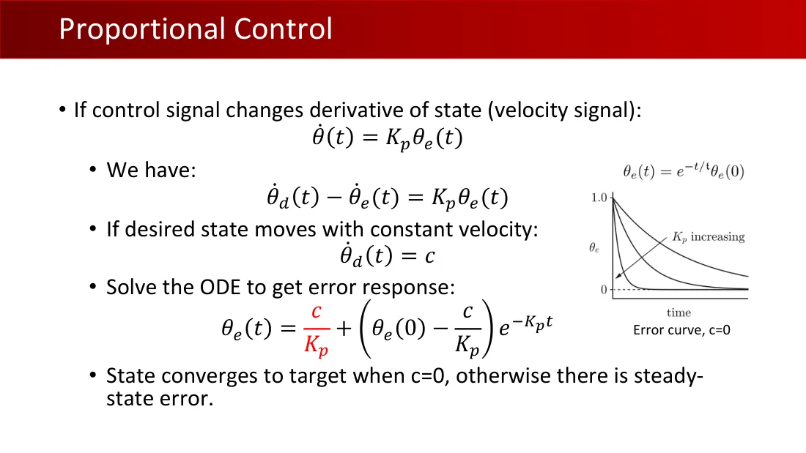
- 若控制信号改变状态的一阶导数（速度信号）：\(\dot\theta(t)=K_p\theta_e(t)\)。
- 有：\(\dot\theta_d(t)-\dot\theta_e(t)=K_p\theta_e(t)\)。
- 若期望状态以恒定速度移动：\(\dot\theta_d(t)=c\)。
- 求解常微分方程得到误差响应：\(\theta_e(t)=\frac{c}{K_p}+\left(\theta_e(0)-\frac{c}{K_p}\right)e^{-K_pt}\)。
- c=0时状态收敛至目标，否则存在稳态误差。
\(\theta_e(t)=e^{-t/\tau}\theta_e(0)\)；\(K_p\)增大；时间；误差曲线，c=0。
Lecture 04 · PDF p48
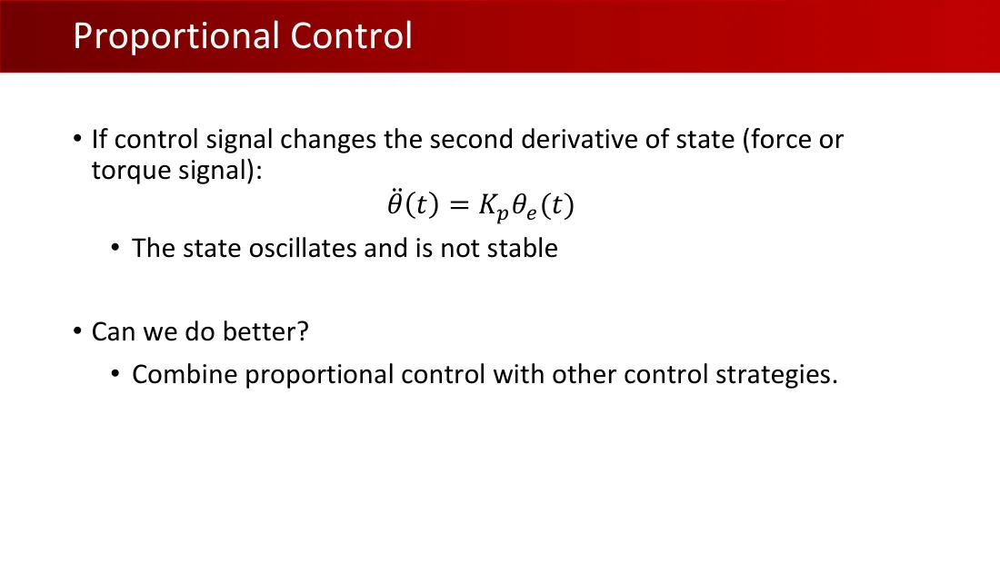
- 若控制信号改变状态的二阶导数（力或力矩信号）：\(\ddot\theta(t)=K_p\theta_e(t)\)。
- 状态振荡且不稳定。
- 可以做得更好吗？将比例控制与其他控制策略结合。
Lecture 04 · PDF p49
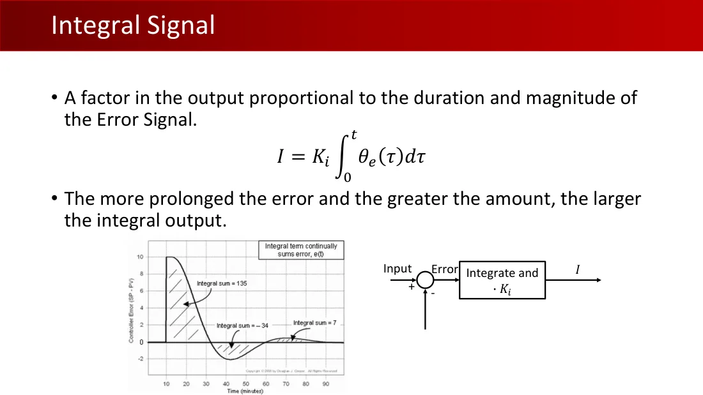
- 输出中与误差信号持续时间及幅度成正比的分量。
- \(I=K_i\int_0^t\theta_e(\tau)\,d\tau\)。
- 误差持续越久、幅度越大，积分输出就越大。
积分项持续累加误差\(e(t)\)；积分和=135；积分和=−34；积分和=7；控制器误差（SP−PV）；时间（分钟）；Copyright © 2003 by Douglas J. Cooper，保留所有权利。
输入；误差；积分并乘以\(K_i\)；I。
Lecture 04 · PDF p50
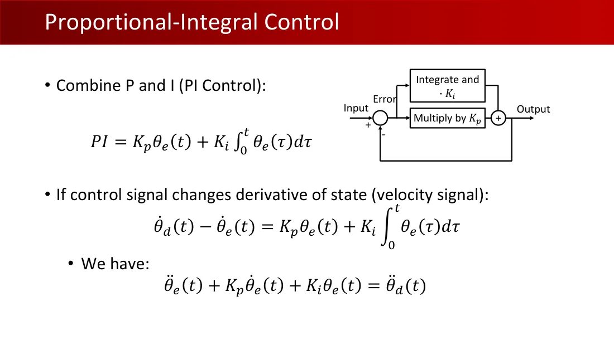
- 将P与I结合（PI控制）：\(\mathrm{PI}=K_p\theta_e(t)+K_i\int_0^t\theta_e(\tau)\,d\tau\)。
- 若控制信号改变状态的一阶导数（速度信号）：\(\dot\theta_d(t)-\dot\theta_e(t)=K_p\theta_e(t)+K_i\int_0^t\theta_e(\tau)\,d\tau\)。
- 有：\(\ddot\theta_e(t)+K_p\dot\theta_e(t)+K_i\theta_e(t)=\ddot\theta_d(t)\)。
输入；误差；积分并乘以\(K_i\)；乘以\(K_p\)；输出。
Lecture 04 · PDF p51
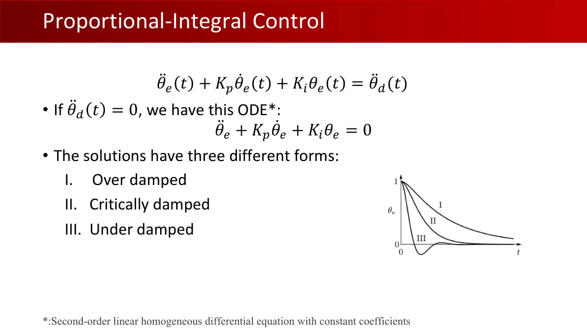
\(\ddot\theta_e(t)+K_p\dot\theta_e(t)+K_i\theta_e(t)=\ddot\theta_d(t)\)。
- 若\(\ddot\theta_d(t)=0\)，得到常微分方程：\(\ddot\theta_e+K_p\dot\theta_e+K_i\theta_e=0\)。
- 解有三种形式：I.过阻尼；II.临界阻尼；III.欠阻尼。
*二阶常系数线性齐次微分方程。
Lecture 04 · PDF p52
Lecture 04 · PDF p53
Lecture 04 · PDF p54
- 将P与D结合（PD控制）：\(\mathrm{PD}=K_p\theta_e(t)+K_d\frac{d}{dt}\theta_e(t)\)。
- 若控制信号改变状态二阶导数：\(\ddot\theta_d(t)-\ddot\theta_e(t)=K_p\theta_e(t)+K_d\frac{d}{dt}\theta_e(t)\)。
- 有（类似PI的速度控制）：\(\ddot\theta_e(t)+K_d\dot\theta_e(t)+K_p\theta_e(t)=\ddot\theta_d(t)\)。
输入；误差；求导并乘以\(K_d\)；乘以\(K_p\)；输出。
Lecture 04 · PDF p55
Lecture 04 · PDF p56
独立增大一个参数的影响
| 参数 | 上升时间 | 超调 | 调节时间 | 稳态误差 | 稳定性 |
|---|---|---|---|---|---|
| \(K_p\) | 减小 | 增大 | 小变化 | 减小 | 变差 |
| \(K_i\) | 减小 | 增大 | 增大 | 消除 | 变差 |
| \(K_d\) | 小变化 | 减小 | 减小 | 理论上无影响 | \(K_d\)小时改善 |
Kiam Heong Ang; Chong, G.; Yun Li（2005）。《PID控制系统分析、设计与技术》。IEEE Transactions on Control Systems Technology，13(4):559–576。
Jinghua Zhong（2006年春）。《PID控制器调参：简短教程》（PDF）。2015-04-21存档，2011-04-04查阅。
https://en.wikipedia.org/wiki/PID_controller#cite_note-24
Lecture 04 · PDF p57
Lecture 04 · PDF p58
使用PhysX内部PD控制器驱动机器人
active_joints = robot.get_active_joints()
if use_internal_drive:
for joint_idx, joint in enumerate(active_joints):
joint.set_drive_property(stiffness=20, damping=5)
joint.set_drive_target(target_qpos[joint_idx])
# 或者，直接为整个关节结构设置关节目标
# robot.set_drive_target(target_qpos)
SAPIEN提供内置PhysX驱动（控制器），以控制关节的位置或速度。对每个活动关节（自由度非零），可调用set_drive_property(...)设置驱动属性stiffness（刚度）和damping（阻尼）。驱动采用比例微分形式，施加的力如下：
\(\mathrm{force}=\mathrm{stiffness}\cdot(\mathrm{targetPosition}-\mathrm{position})+\mathrm{damping}\cdot(\mathrm{targetVelocity}-\mathrm{velocity})\)
https://sapien.ucsd.edu/docs
Lecture 04 · PDF p59
Lecture 04 · PDF p60
Lecture 04 · PDF p61